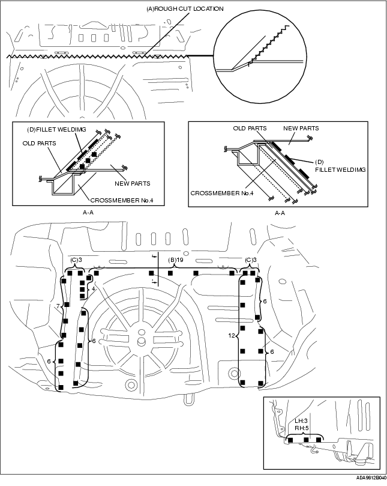

Rear floor pan installation
1. When joining new and existing parts, temporarily install the new parts in position, measure each parts, and then adjust to match the specified measurements.
2. Cut area (A) on the new parts.
3. Apply spot sealer to the areas where both the overlapping ends of the new and existing parts will be welded. Adhere the sections to be welded, and plug weld in 19 locations indicated by (B) and in 6 locations indicated by (C). Fillet weld along both seams in the manner indicated by areas (D).
4. Apply body sealer to the overlapping areas (D) of the new and existing parts, and to where they are conjoined with the wheel house inner.
